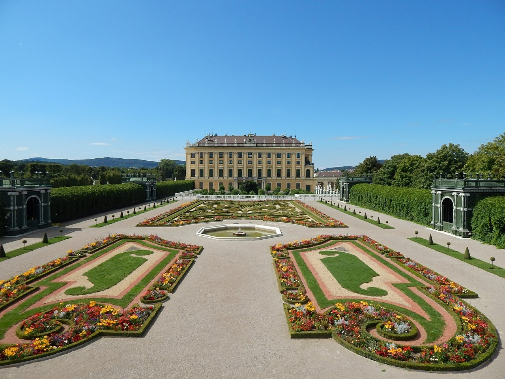

My Vacation - Austria
This is my vacation in austria....

Cities in Austria
- Vienna
- Baden
- Salzburg
Link to list of cities

My First day in Austria
The English name Vienna
is borrowed from the homonymous Italian version of the city's name or the French Vienne.
The etymology of the city's name is still subject to scholarly dispute. Some claim that the name comes from vedunia, meaning "forest stream", which subsequently produced the Old High German uuenia (wenia in modern writing), the New High German wien and its dialectal variant wean.
Others believe that the name comes from the Roman settlement name of Celtic extraction Vindobona, probably meaning "fair village, white settlement" from Celtic roots, vindo-, meaning "bright" or "fair" – as in the Irish fionn and the Welsh gwyn –, and -bona "village, settlement".
The Celtic word vindos may reflect a widespread prehistorical cult of Vindos, a Celtic God who survives in Irish Mythology as the warrior and seer Fionn mac Cumhaill. A variant of this Celtic name could be preserved in the Czech, Slovak and Polish names of the city (Vídeň, Viedeň and Wiedeń respectively) and in that of the city's district Wieden.